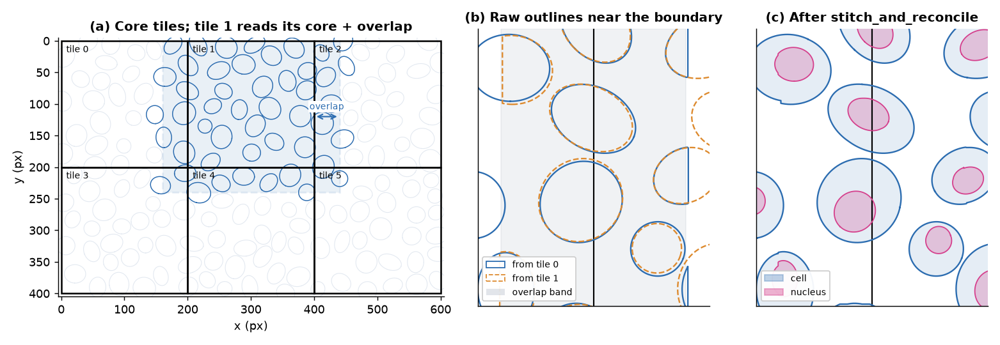
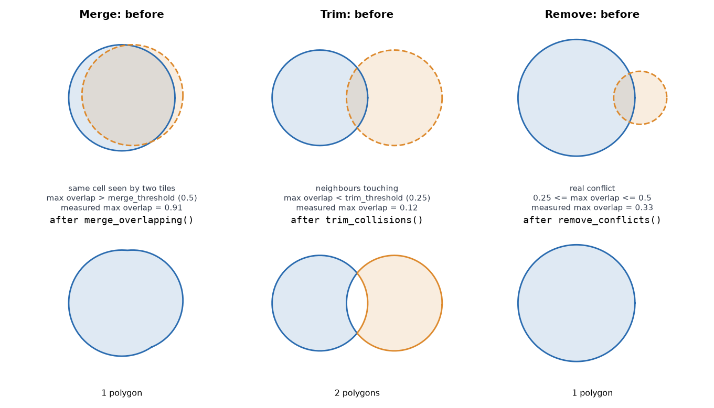
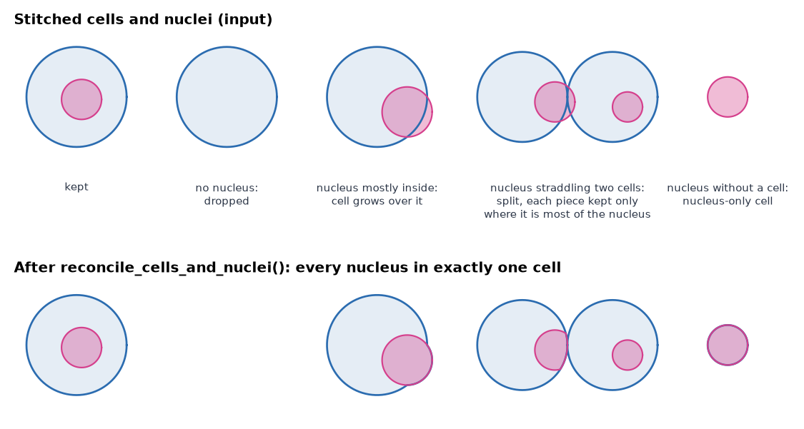
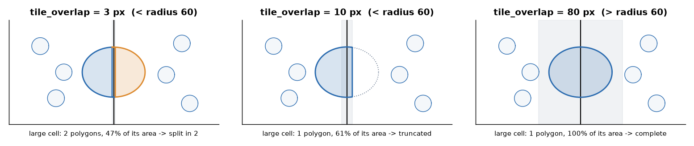

Tiling and stitching¶
A whole slide is too large for one Cellpose call, so SMINT cuts it into tiles,
segments the tiles in parallel and joins the results. This page shows how the
tiles overlap, why that creates duplicate cells, how the three stitching phases
remove them, how cells and nuclei are reconciled, and how to choose
tile_overlap. Every figure was made by running SMINT's own stitching code on
synthetic outlines; only the Cellpose step is simulated.
flowchart LR
A["Core tile grid<br/><code>generate_tiles</code>"] --> B["Each worker reads<br/>core + overlap"]
B --> C["Cellpose on the<br/>expanded tile"]
C --> D["Label masks: core only<br/>→ cells.zarr, nuclei.zarr"]
C --> E["Outlines: whole expanded tile<br/>→ boundary cells reported twice"]
E --> F["Stitch nuclei<br/>merge → trim → remove"]
E --> G["Keep cells touching a nucleus,<br/>then stitch cells"]
F --> H["Reconcile<br/>one nucleus, one cell"]
G --> H
H --> I["cells_ / nuclei_<br/>outlines.csv + summary.csv"]Core tiles and the overlap¶
run_distributed_segmentation divides the image into a grid of square core
tiles (tile_size, default 2048 px). Each Dask worker reads its core tile
expanded by tile_overlap on every side (default 256 px, clipped at the
image edge) and runs Cellpose on the whole expanded region. Then:
- It writes only the core of its label masks into the shared
cells.zarr/nuclei.zarr, so no pixel is written twice. - It extracts outlines from the whole expanded region, so a cell that crosses a core boundary is reported complete by at least one tile.
The price is that every cell inside an overlap band is reported by two tiles (four at a corner). That is what stitching removes.

stitch_and_reconcile: one outline per cell, each
with its nucleus. The six tiles reported 273 cell outlines; merging left
167, and 166 of them match a true cell with IoU > 0.5.The three stitching phases¶
stitch_polygons (a Python port of stitching/stitching.Rmd)
measures every intersecting pair by its maximum overlap: the intersection
area divided by the smaller polygon's area. Then it runs three phases, each on
the result of the last:
| Phase | Applies to pairs with | Action | Why |
|---|---|---|---|
| Merge | max overlap > stitch_merge_thresh (0.5) |
Union the pair; repeat until nothing more merges | The same cell seen by two tiles, or a fragment of it |
| Trim | max overlap < stitch_trim_thresh (0.25) |
Remove the overlap from both | Neighbouring cells that touch |
| Remove | max overlap ≥ 0.25 (and not merged) | Drop the smaller polygon | A genuine conflict that neither merging nor trimming explains |

Nuclei are stitched first. Cells that touch no stitched nucleus are then
dropped, and the remaining cells are stitched the same way. Both thresholds
can be set in the distributed section of the config or as arguments; the
defaults suit most tissue.
Reconciling cells and nuclei¶
Stitching makes each object type consistent on its own. Reconciliation
(reconcile_cells_and_nuclei, on by default as reconcile_nuclei) makes the
two consistent with each other, so every nucleus ends up inside exactly one
cell:
- Drop cells with no nucleus, and cells whose only nucleus barely touches them (less than 10% of the nucleus inside).
- Grow a cell over a nucleus that is more than half inside it and touches no other cell.
- Split a nucleus that straddles several cells. A piece is kept if it is at least half the nucleus, or, for a cell with no other nucleus, at least 40% (two cells) or 30% (three or more).
- Remove duplicate, contained and mostly covered objects; cut any remaining overlap out of the larger one.
- Assign each nucleus to its cell. A nucleus with no cell becomes a nucleus-only cell.

reconcile_cells_and_nuclei: 5 cells and 5 nuclei in, 5 cells
and 5 nuclei out, each nucleus in one cell. The cell without a nucleus is
dropped and the nucleus without a cell becomes a cell of its own.The output summaries record the result: n_nuclei per cell in
cells_summary.csv, and the containing cell's global_cell_id as cell_id
in nuclei_summary.csv. Before outlines are extracted, each worker also splits
cells that contain several nuclei with a watershed seeded on the nuclei
(split_multinucleated, on by default).
Choosing tile_overlap¶
Stitching can only rebuild a cell that at least one tile saw whole, or whose two fragments overlap enough to merge. Both are guaranteed when the overlap is larger than the radius of the largest cell, in pixels: a cell that crosses a core boundary then lies entirely inside the expanded window of the tile that holds its centre.

Rules of thumb:
- Set
tile_overlapabove the largest cell radius you expect, not the typical one. The default of 256 px covers cells up to about 500 px across. - A larger overlap costs extra Cellpose time on every tile: each tile reads
(tile_size + 2 × tile_overlap)²pixels. - Raise
tile_sizerather than shrinking the overlap if you need fewer, larger tiles. Very many tiles can also overflow the per-tile label IDs, which SMINT reports before it starts.
Stitching outlines you already have¶
The stitching functions work on any Shapely polygons in a consistent unit, so you can also use them on outlines from another tool:
import pandas as pd
from smint.segmentation.distributed_seg import stitch_and_reconcile
# Outline dicts as segment_tile / get_cell_outlines return them:
# {"x_coords": [...], "y_coords": [...]}. From vertex CSVs (global_cell_id, x, y):
def outlines_from_csv(path):
return [{"x_coords": g.x.to_numpy(), "y_coords": g.y.to_numpy()}
for _, g in pd.read_csv(path).groupby("global_cell_id")]
cell_outlines = outlines_from_csv("cells_outlines.csv")
nuclei_outlines = outlines_from_csv("nuclei_outlines.csv")
cells, nuclei, nucleus_cell = stitch_and_reconcile(cell_outlines, nuclei_outlines)
# nucleus_cell[k] is the index in `cells` of the cell holding nucleus k
Next steps¶
- All segmentation options: Segmentation.
- Run it across GPUs: Distributed segmentation on SLURM and Running on HPC.
- Config keys: Configuration.
- API: Segmentation reference.
Figures are generated by docs/assets/concepts/src/make_tiling_figures.py,
which calls generate_tiles, stitch_and_reconcile, stitch_polygons and the
individual phase functions.